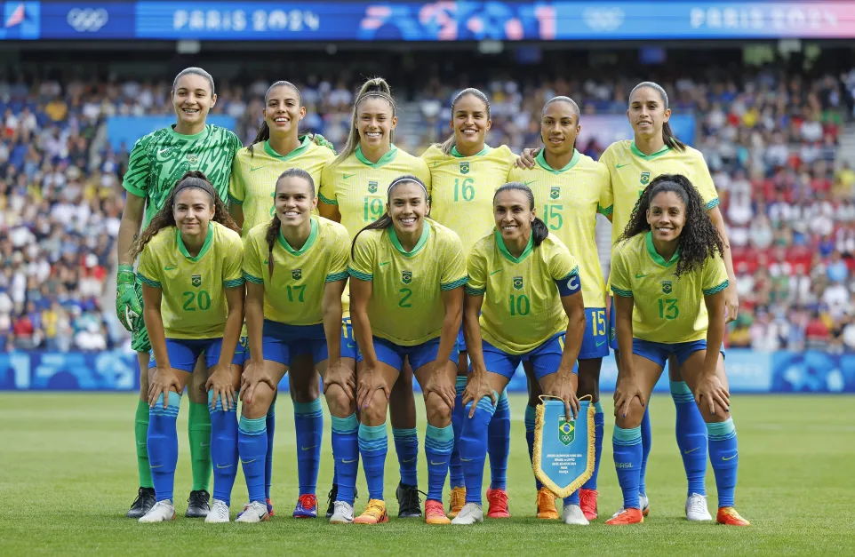

Jiu-jitsu
Estar no tatame é uma das maiores sensaçoes de paz que existe.
O jiu-jitsu desempenha um papel fundamental na minha vida, oferecendo muito mais
do que apenas
um sistema de defesa pessoal. Para mim, é uma fonte constante de disciplina, foco
e autoconhecimento

Site oficial da CBJJ
Futebol
Assistir a uma partida de futebol é uma das maiores alegrias e momento de satisfação
que eu tenho em minha semana.O futebol ocupa um lugar especial na minha vida, funcionando
como uma fonte de alegria, disciplina e conexão. Desde cedo, o esporte me ensinou o valor
do trabalho em equipe, a importância de
cada membro no esforço coletivo e a habilidade de superar desafios. Em campo, aprendi
a resiliência, o foco e a estratégia, habilidades que levo para
outras áreas da minha vida.

Site oficial da CBF